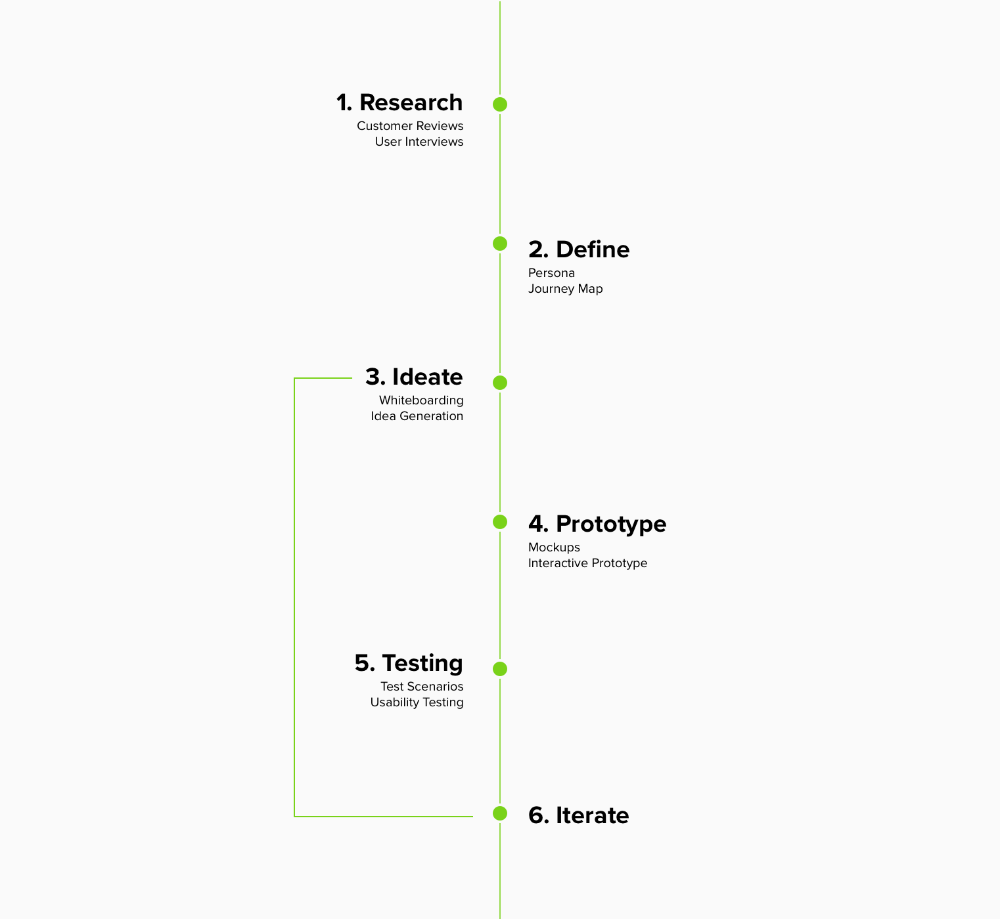
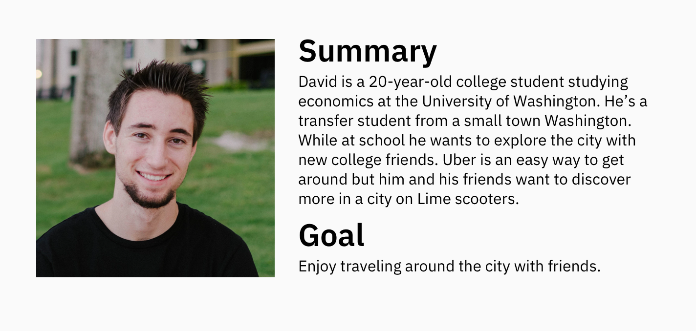

Back to Home
Lime App - Group Rides
Project Scope:
- My Role: UX Design, Research, Product Thinking
- Tools: Sketch, Adobe XD
- Timeline: Sep 2018 (2 Weeks)
- Deliverables: Sketches, interactive XD prototype, research findings
- Team: Just me, myself and I
The Problem
A feature allowing a Lime users to rent multiple scooters on one mobile phone is not currently available. Lime users have complained throughout the reviews in app store about the lack of this kind of feature.
The Solution
I designed a simple feature within Lime that allows riders rent multiple scooters on a single phone.
My Approach
Research
Before diving into any problem I always strive to find out if this problem is worth solving and then understand the problem more deeply.
To start my research I went to the app reviews for Lime to see if other customers are facing this same problem. As result, I found many customers complaining about the issue stated above. From here I wanted to learn more about the specific use cases directly from the users, so I interviewed 6 Lime riders to dig deeper. I also found a survey conducted by Lime in San Francisco that gave me more information about Lime customers.
Research Findings:
- Lime riders want the ability to rent multiple scooters for a group on one phone.
- In a survey conducted by Lime, results showed that 10% of riders are using scooters for recreation.
Discovered Use Cases:
A group of friends or family wants to go ride scooters together...
- but one friend’s phone is dead
- but the payment info doesn’t work on one of the friend’s phones
- but the data isn’t working on a friends phone so they can’t download the app
- but a family member didn't bring their phone
User Quotes:
Define
Based on the research and discovered use cases, I developed a persona focus on riding Lime scooters for recreation in groups.
Why solve this problem?
Solving this problem could help benefit the business and customer:
- New Users - By focusing on recreation Lime riders as the target market for this project, Lime will be able to provide a better experience for new or potential Lime riders.
- Product differentiation - Currently, other Lime competitors such as Bird & Spin do not allow users to rent multiple scooters on one phone.
- Ease of use - Helping serve these specific edge cases would create a simple solution for Lime riders looking to ride in groups for recreation.
Ideate
I started my ideation process by sketching on a whiteboard. After brainstorming, I felt that visibility and user control were important heuristic evaluation principles that I needed to focus on while designing. I felt this way because a user renting 2-5 scooters will want to be able to view how many scooters they have rented and have the ability to end scooter rides at any time. I designed components to represent each rented scooter with the QR code provided.

Things I considered:
- How should users be notified about this new feature?
- How many scooters should a user be able to rent?
- Who is responsible if the scooter is damage? Renter or rider?
After brainstorming on the whiteboard I was able to visualize a flow for a Lime rider adding multiple scooters then removing them after their group ride. Then I went into Sketch to build out each screen.
Testing with users
Once I explored different ideas I wanted to test this idea with Lime customers. I did some qualitative testing with a few screens to test some variations. I then mocked up screens in Sketch to built my prototype in XD. I conducted usability tests with 6 Lime customers.

Research Findings:
- Users understand why there was a required time to get to the scooter
- Users want this feature to be optional
- Users felt 15-minutes was enough time to get to the scooter
- Users want to know they have a 15 minute time limit on the reservation
Iterate
To help users be aware of the time limit on the reservation feature, I added a first-time feature interaction. This would allow the user to explore the reservation feature for the first time without committing to it.